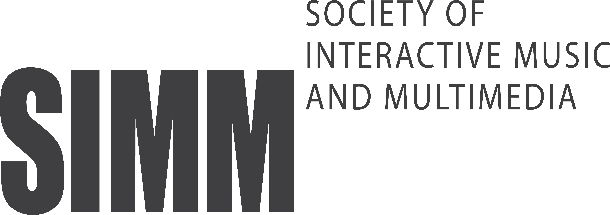

DYSTOPIA: VANISHED SOUNDS
디스토피아: 소멸된 소리

한국멀티미디어음악학회 SIMM
한국멀티미디어음악학회 회원들의 작품들로 구성된 전시로 소리를 볼 수 있고 영상을 들을 수 있는 공감각적 요소를 활용한 작품들로 구성되어 있습니다.
기존의 음악 전시와 달리 현 시대의 예술에 요구되는 멀티미디어 요소를 충족시키기 위하여 다양한 복합적 예술장르를 결합한 창작 전시로 시청각의 교감을 통하여 예술적 영감의 표현을 극대화하고, 디지털 영상 처리 등 다양한 요소와 음악 간의 접목을 통하여 하나의 융합예술로서 완성된 다양한 작품들을 선보입니다.
본 전시는 한국멀티미디어음악학회 회원들의 창작 작품들로 구성되어 있으며, 소리와 영상이 결합된 공감각적 예술 경험을 선사합니다. 음악과 디지털 영상 처리 기술이 융합된 작품들을 통해 시청각의 교감을 극대화하고, 관람객들에게 복합적 예술 장르가 통합된 새로운 형태의 멀티미디어 예술을 경험할 수 있는 기회를 제공합니다.